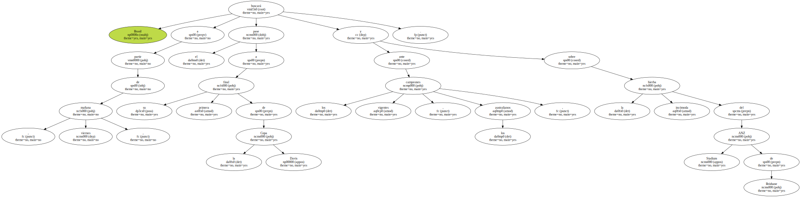
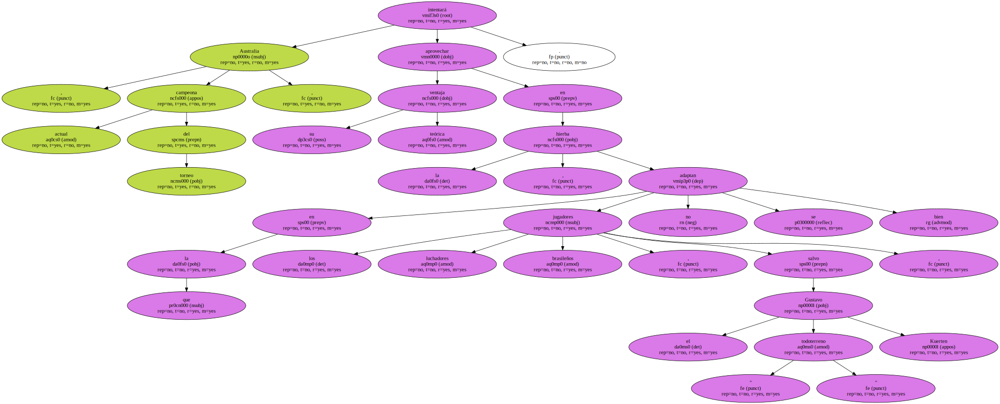
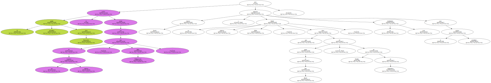
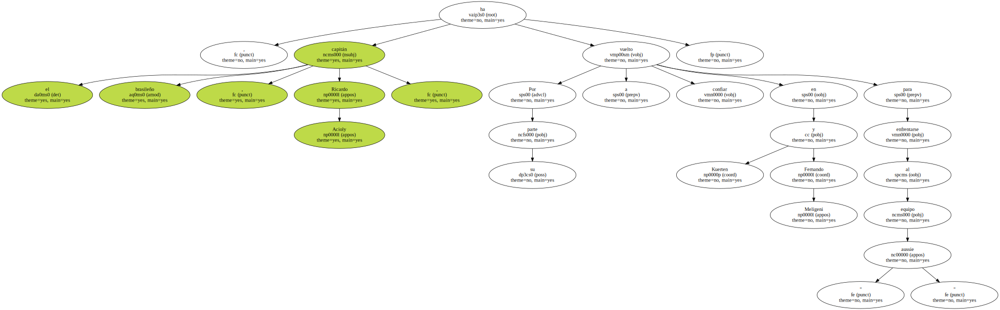
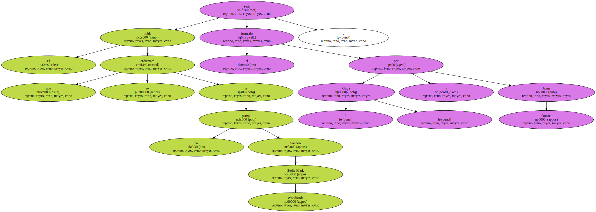
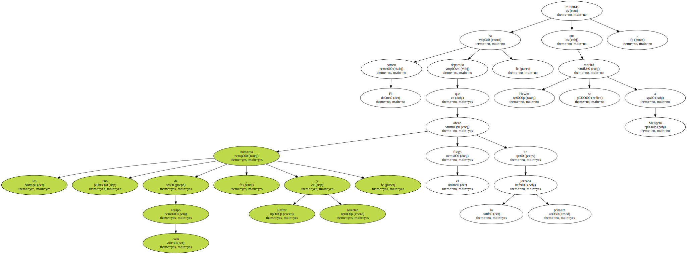
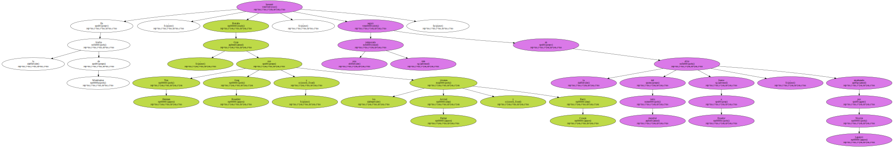
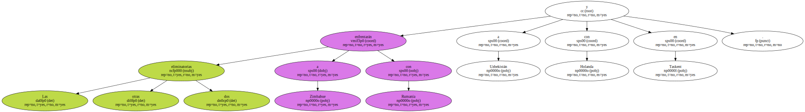

Brasil buscará a partir de mañana , viernes , el pase a su primera final de la Copa Davis ante los vigentes campeones , los australianos , y sobre la incómoda hierba del ANZ Stadium de Brisbane.
Australia , actual campeona del torneo , intentará aprovechar su teórica ventaja en la hierba , en la que los luchadores jugadores brasileños , salvo el " todoterreno " Gustavo Kuerten , no se adaptan bien.
El capitán australiano John Newcombe no podrá contar con uno de sus mejores hombres , Mark Philippoussis , pero Lleyton Hewitt y un pletórico Patrick Rafter , que viene de ganar en Den Bosch y ser finalista en Wimbledon , aseguran un gran rendimiento para el equipo australiano.
Por su parte , el capitán brasileño , Ricardo Acioly , ha vuelto a confiar en Kuerten y Fernando Meligeni para enfrentarse al equipo " aussie ".
El doble que se enfrentará a la pareja Sandon Stolle-Mark Woodforde será el formado por " Guga " y Jaime Oncins.
El sorteo ha deparado que los números uno de cada equipo , Rafter y Kuerten , abran el fuego en la primera jornada , mientras que Hewitt se medirá a Meligeni.
La otra semifinal enfrentará a España con Estados Unidos en Santander sobre tierra batida del 21 al 23 de julio , pero este fin de semana también se disputarán tres eliminatorias para la permanencia en el Grupo Mundial.

En la hierba de Wimbledon , Gran Bretaña , con Tim Henman , Greg Rusedski y los jóvenes Arvind Parmar y Barry Cowan , buscará seguir una temporada más en la elite del tenis mundial frente a Ecuador , encabezada por Nicolás Lapentti.
Las otras dos eliminatorias enfrentarán a Zimbabue con Rumanía y a Uzbekistán con Holanda en Taskent.
